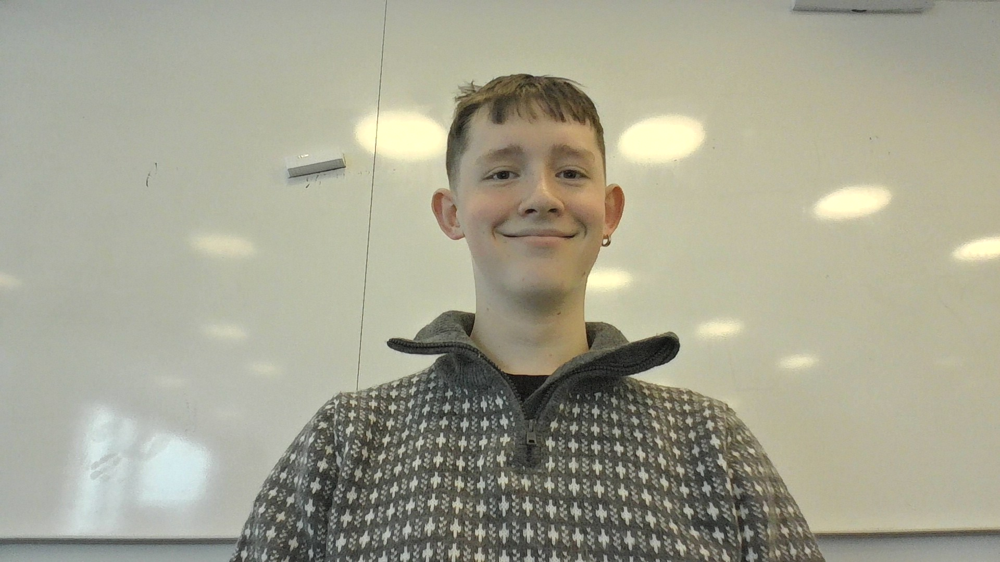

the main stuff


Mitt navn er Tristan Larsen Horn og jeg er elev på Amalie skram, ITM linjen. Jeg bruker fritiden min på å spille viedospill på Xbox-en min og PC-ene mine. Jeg går også på pistol skyting!
the main stuff